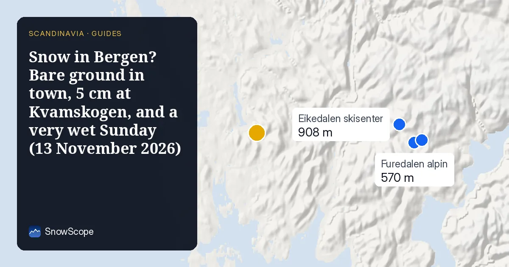

Snow in Bergen? Bare ground in town, 5 cm at Kvamskogen, and a very wet Sunday (13 November 2026)
Bergen sits in a rain shadow on 13 November. The measuring station at Florida in the city centre records bare ground, unchanged all week. Yet 35 km to the east, where the land rises toward the plateau, Kvamskogen stands at 455 m with 5 cm of snow on the ground.
See the live snow forecast for Bergen in the SnowScope appSnow depth, powder alerts and the 3D map, free.
Snow arrives with altitude
The snow line is sharp in western Norway in mid-November. At sea level in Bergen, grass and tarmac are wet and dark. Climb inland to Kvamskogen and white appears. At Mjølfjell, 695 m and 95 km from the city, the depth reaches 10 cm. Push further into Eidfjord to Fet, at 737 m, and you find 9 cm lying there undisturbed.
This vertical pattern is normal. Cold air masses that bring snow to the mountains rarely stay long enough to cover the low ground near the ocean. Bergen's November snow is fleeting when it comes at all, and this year the city has seen none.

November snow in Bergen: more myth than memory
Records from 46 past winters tell the story. On 13 November, Bergen's near-sea-level ground has carried snow in only 15 of those 46 years. Thin, brief cover was the norm: the middle depth for this date is zero centimetres, and even the deepest November snow on record here was only 12 cm. The last five winters—from 2021-22 through 2025-26—all brought bare ground on this exact date.
Look ahead and the pattern holds. In half of past winters, Bergen waited until 19 December before snow settled for the season. By mid-January, when other Scandinavian cities lie under substantial cover, Bergen's average depth is just 1 cm. The mountains inland keep snow much longer, but the city itself is a poor bet for early-season skis.
Sunday: rain dominates the forecast
Saturday starts mild, around 2 to 3 °C, with 11 to 15 mm of rain. Sunday intensifies. The forecast shows 38 to 40 mm of rain falling as the temperature hovers between 4 and 8 °C—warm enough that any moisture falling on the high ground will likely be rain, not snow. Monday brings another 15 mm or so, still on the mild side.
Up at Kvamskogen and beyond, this three-day downpour will work against the thin snow that now lies there. Warm rain on shallow cover means consolidation and loss, not growth. Skiers heading toward Voss or the plateaus can expect slush at best on Sunday, and bare patches by Monday morning on south-facing slopes below 500 m.
What this means for the week ahead
Bergen itself will stay snow-free through the weekend and into next week. The mountains will shrink their cover under the rain. For anyone hoping to find skiable snow within a day's drive of the city, patience is the only honest advice. The pattern typical for November—mild, wet, low snow line—is in full control.
Real accumulation usually waits for December in this region. When it comes, it arrives suddenly: a cold snap from the north, and the whole landscape changes. For now, Bergen remains what it has been all week: a city of rain, with white reserved for the high ground beyond sight.
Looking at the numbers
Kvamskogen's 5 cm sits alone among the valleys near Bergen. The inland stations—Mjølfjell at 10 cm and Fet at 9 cm—represent the best current snow cover within 100 km. Yet even these depths are thin for November's end. Any warmer spell or significant rain, like the one forecast for Sunday, will shrink them further.
The forecast offers no relief before mid-week. After Monday's rain, no fresh snow appears in the SnowScope forecast through 16 November. Temperature trends show no sharp drop that might lock in what remains. The winter season in western Norway is unfolding slowly, as it often does.
Tips for skiers
- Pack rain gear, not snow gear, for this weekend. Sunday's 38 to 40 mm makes it a day for indoor activities—museums, galleries, the aquarium.
- If you drive inland toward the plateau, watch for slush and icy patches above 400 m as rain-soaked snow refreezes overnight. Roads crossing Kvamskogen can transition from wet tarmac to ice within minutes as altitude increases.
- Skiers with passes on the high plateaus should inspect south-facing slopes carefully. Thin snow under warm rain often exposes rocks and grass, especially below 500 m.
- City walkers should mind the streets and stairs: wet leaves and flowing water on steep terrain make footing treacherous, rain or no snow.
- Early-season powder and deep snow are not in the forecast. If you are chasing fresh white cover, check back after the next cold front arrives, likely in December.
About these numbers
Resort snow depths are the deepest snow on the resort's upper slopes on the date shown; they are estimates for an area, not a measurement at one point. Forecasts can change. Always read the official avalanche bulletin before going off-piste.
Cite this report
For research, teaching or the press: the numbers and charts are free to reuse under CC BY 4.0 with this citation.
SnowScope (2026), Snow in Bergen? Bare ground in town, 5 cm at Kvamskogen, and a very wet Sunday (13 November 2026), https://snowscope.app/blog/en/2026/11/bergen-snow-today-13-november-2026.html, accessed 2026-11-13
SnowScope (Atlas Labs). (2026, November 13). Snow in Bergen? Bare ground in town, 5 cm at Kvamskogen, and a very wet Sunday (13 November 2026). SnowScope snow reports. https://snowscope.app/blog/en/2026/11/bergen-snow-today-13-november-2026.html
BibTeX
@misc{snowscope2026bergensnowtoday13novembe,
author = {{SnowScope (Atlas Labs)}},
title = {Snow in Bergen? Bare ground in town, 5 cm at Kvamskogen, and a very wet Sunday (13 November 2026)},
year = {2026},
month = nov,
howpublished = {\url{https://snowscope.app/blog/en/2026/11/bergen-snow-today-13-november-2026.html}},
note = {Published 2026-11-14 13:29 UTC; accessed 2026-11-13}
}· CC BY 4.0 · Methods, data and tools →
Follow Bergen
Free: a message when fresh snow is coming, and the forecast every morning.
More snow reports

Vuokatti snow conditions in mid-November 2026: the stations at Sotkamo measured 0 cm on 13 November, Kajaani 1 cm; about 9 cm is forecast this week but some of it as rain; slopes aim to open 4 December. 46 past winters.

Voss will see 35 cm at the summit but rain at the base over the next week. Snow sits above 600 m, measuring 10 cm at nearby Mjølfjell on 13 November.

Vemdalen snow conditions in mid-November 2026: Swedish weather stations around Vemdalsskalet and Björnrike measured 6 to 12 cm on 13 November after a snowy two days, about 8 cm more this week, opening plans and 46 past winters.